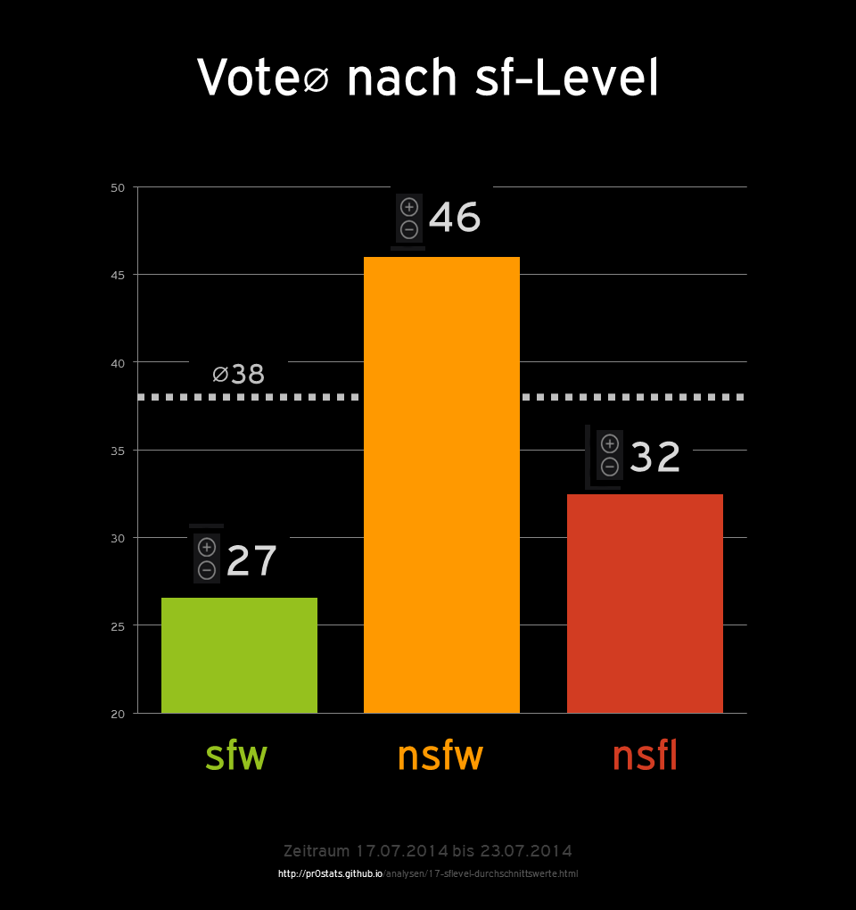

sf-Level Durchschnittswerte
auf pr0gramm

Resultate
- ⌀
sfw 26.5746
- ⌀
nsfw 45.9761
- ⌀
nsfl 32.4905
- ⌀
total 31.8074
- Der Gesamtdurchschnitt wird separat aus allen Beiträgen berechnet (vgl. Methodik) und beschreibt nicht den Durchschnitt aus den drei Durchschnittswerten (dieser wäre
(27 + 46 + 32) / 3 = 35)
- Die Durchschnittswerte beschreibt das durchschnittliche Ergebnis aller betrachteter Uploads, welches man durch Subtraktion der Downvotes (
down) von den Upvotes (up) erhält
Methodik
- siehe Hinweise zur Methodik
- Zeitraum
07/17/2014 bis 07/23/2014
SELECT AVG(CAST(`up` AS SIGNED) - CAST(`down` AS SIGNED)) AS `average`, `sf_level` FROM `pr0stats` WHERE DATE(FROM_UNIXTIME(`created`)) >= '2014-07-17' AND DATE(FROM_UNIXTIME(`created`)) <= '2014-07-23' GROUP BY `sf_level` ORDER BY `sf_level` ASCSELECT AVG(CAST(`up` AS SIGNED) - CAST(`down` AS SIGNED)) AS `average` FROM `pr0stats` WHERE DATE(FROM_UNIXTIME(`created`)) >= '2014-07-17' AND DATE(FROM_UNIXTIME(`created`)) <= '2014-07-23'